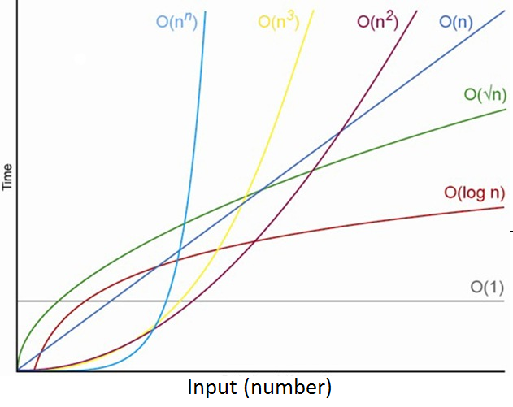

Imagine your friend Rahul building a LEGO tower. He measures how long it takes and how many pieces he uses.
Programmers do the same — they check how much time and memory a program needs.

Time Complexity → How long your code takes to run. Space Complexity → How much memory your code uses.
💡 Fun Fact: Even Google checks the time complexity of their search algorithm so that results appear in milliseconds!
1️⃣ Big-Θ (Theta) — Exact Time
Think of Θ as the average time your code usually takes.
Example: you normally take 10 minutes to walk to school — not the fastest, not the slowest — just average!
function linearSearch(arr, target) {
for (let i = 0; i < arr.length; i++) {
if (arr[i] === target) return i;
}
return -1;
}
This code runs n times in the worst case → Θ(n)
🧩 Try This!
Make a list of your 10 favorite movies and write a program to find one name.
Then increase it to 1,000 movies. See the difference — that's time complexity!
💡 Fun Fact: Θ(n) means your program’s time grows directly with input size — double input, double time!
2️⃣ Big-O — The Upper Limit
Big-O means the maximum time your code might take.
Like saying, “Even if traffic is bad, I’ll reach in 30 minutes.”
function binarySearch(arr, target) {
let start = 0, end = arr.length - 1;
while (start <= end) {
let mid = Math.floor((start + end) / 2);
if (arr[mid] === target) return mid;
else if (arr[mid] < target) start = mid + 1;
else end = mid - 1;
}
return -1;
}
Binary Search runs in O(log n).
Even if you double your input size, time increases slowly.
🧩 Try This!
Try searching your name in a sorted contact list using binary search steps (divide and compare).
You’ll see it’s super fast compared to checking one by one!
💡 Fun Fact: O(1) is the fastest — it means instant result, like opening a fridge to get a bottle already in front!
3️⃣ Big-Ω (Omega) — Best Case
Big-Ω is the minimum time your code takes.
Example: You find your shoes near the door instead of searching the whole house — that’s Ω(1)!
In binary search, if you find the element at first try → Ω(1).
💡 Fun Fact: Ω helps know the best possible performance, even if it’s rare!
📘 Quick Summary
Θ(f(n)): Exact average growth rate.
O(f(n)): Maximum (worst case).
Ω(f(n)): Minimum (best case).
👉 Think of it as travel time: Ω = shortest, Θ = usual, O = longest!